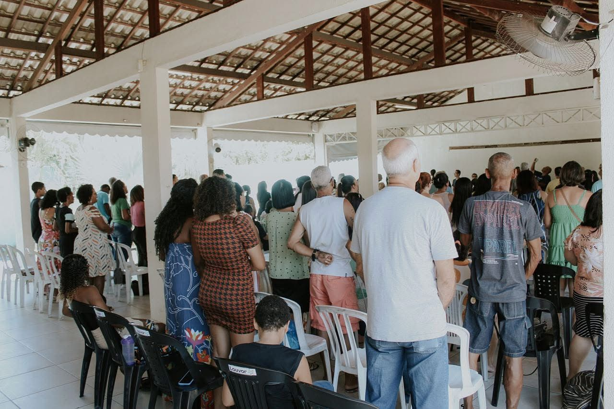
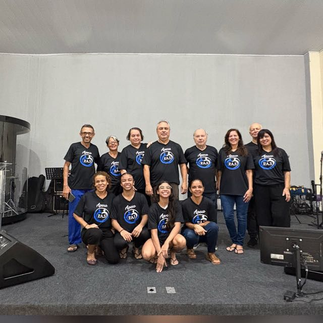

Uma Igreja Bíblica
Firmada nas Escrituras como única regra de fé e prática, comprometida com a verdade do evangelho.
Uma igreja firmada na Palavra de Deus, comprometida com a pregação fiel das Escrituras e com a formação de discípulos de Jesus Cristo.
Uma igreja bíblica, que cuida da família e vive em comunhão através de células.
Salvação pela graça, mediante a fé. Vida transformada pelo poder do Espírito Santo.
A Igreja Cristã Reformada Avivalista é uma igreja que tem como fundamento exclusivo a Bíblia Sagrada e como propósito viver e anunciar o evangelho de Jesus Cristo.
Nosso nome expressa quem somos: uma igreja reformada, firmada nas Escrituras, e avivalista, que crê no agir vivo de Deus através do Espírito Santo.
Cremos que a salvação é pela graça, mediante a fé em Cristo, e que essa fé produz arrependimento, transformação de vida e santificação.
Somos uma igreja que valoriza a comunhão, o cuidado mútuo e a edificação espiritual, entendendo que a igreja é o corpo de Cristo.

Firmada nas Escrituras como única regra de fé e prática, comprometida com a verdade do evangelho.
Comprometida com o fortalecimento dos lares, com amor, ensino, cuidado pastoral e comunhão.
Que vive a comunhão no dia a dia, promovendo discipulado, cuidado mútuo e crescimento espiritual.
Estar comprometido em pregar e viver as Sagradas Escrituras, com o objetivo de adorar a Deus, socorrer os necessitados e formar discípulos de Jesus Cristo.
Ser uma igreja missionária que reflita a glória do Reino de Deus em nossa sociedade.
Uma Igreja Bíblica.
Uma Igreja que cuida da Família.
Uma Igreja em Células.
Porque temos como referência os princípios da Reforma Protestante:
Sola Fide – Somente a fé
Sola Gratia – Somente a graça
Sola Scriptura – Somente as Escrituras
Solus Christus – Somente Cristo
Soli Deo Gloria – Glória somente a Deus
Esses princípios orientam nossa fé e prática.
Porque cremos no poder e na soberania de Deus, que continua operando em seu povo.
Cremos na ação do Espírito Santo, na transformação de vidas e na manifestação dos dons espirituais como fruto de uma vida em santificação e relacionamento com Deus.

O Instituto Reformado Vivit é a plataforma de ensino bíblico da Federação ICR, dedicada à formação espiritual e ao aprofundamento na Palavra de Deus.
Através de cursos online, gratuitos, buscamos ensinar a Bíblia de forma clara, prática e fiel às Escrituras, fortalecendo a fé e capacitando cada cristão para viver o evangelho no dia a dia.

Cremos em um único Deus, eternamente existente em três pessoas: Pai, Filho e Espírito Santo.
Cremos que a Bíblia Sagrada é a Palavra de Deus, sendo a única regra de fé e prática.
Cremos que o homem, por causa do pecado, está afastado de Deus e necessita de salvação.
Cremos que Jesus Cristo é o único e suficiente Salvador, que morreu e ressuscitou para nos reconciliar com Deus.
Cremos que a salvação é pela graça, mediante a fé, e não por obras.
Cremos na atuação do Espírito Santo, que convence do pecado, regenera, santifica e capacita o crente.
Cremos que a igreja é o corpo de Cristo, formada por todos os que creem em Jesus.

A vida cristã é marcada por um relacionamento constante com Deus, através da leitura da Palavra, oração e prática da fé.
Cremos que a santificação é um processo contínuo, evidenciado por uma vida transformada.
Vivemos em comunhão, fortalecendo uns aos outros na caminhada cristã.
Como igreja, expressamos essa comunhão também através das células, promovendo cuidado, discipulado e crescimento espiritual.

Atuamos no ensino e cuidado de diferentes áreas da igreja:
Ensino;
Familia;
Célula;
Ensino KIDS;
Jovens;
Mulheres;
Homens;
Melhor Idade;
Social,
Desenvolvendo ações e iniciativas de cuidado com a comunidade, refletindo o amor de Cristo na prática, e
Entre outros.

Aqui você pode acessar os principais documentos da igreja:
Documento oficial que organiza de forma clara e sistemática as crenças da igreja.
Documento oficial que organiza de forma clara e sistemática as crenças da igreja.

Clique aqui para ofertar e apoiar nosso trabalho.
Chave PIX da Federação
43.557.880/0001-04
Documentos
Escolha como deseja acessar este documento.